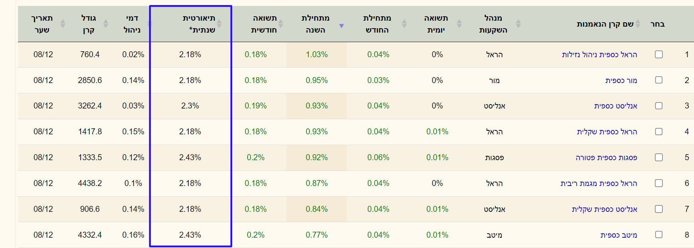

“ישנם מסלולי השקעה סולדים שאינם הפיקדונות בבנק…
נזילות לחלוטין ואפילו בטוחות יותר, מעניקות ריבית גבוה יותר מזה של הפיקדונות בבנק….”
כך מכריז נגיד בנק ישראל בוועדת הכספים (28.11.22). (לצפייה מדקה 1:32:00)
זה שנים שריבית הבנק על הפיקדונות היא 0.01% ועדיין אנשים בוחרים לשים את כספים בפיקדונות אילו.
כעט, שהאינפלציה ממריאה מעלה (5.1% בכתיבת שורות אילו)
שואל הצרכן החכם, למה להמשיך להפקיד בבנק אם הבנק נותן לי 2%-3% בשנה על פיקדון אשר לא נזיל למשך תקופה של 12 חודשים לפחות.
הפער בין האינפלציה לתשואה הבנקאית היא הפסד וודאי ויתרה מכך, הכסף אינו נזיל.
במאמר זה אשתף באלטרנטיבה מעניינת לחוסך הממוצע,
אשפוך מעט אור על מוצר שימושי ופחות מוכר לרוב החוסכים – קרן כספית.
אין במאמר זה המלצה או בגדר ייעוץ אלא יש במאמר זה כוונה לחשוף את הציבור לכלים פרקטיים.
מהיא קרן כספית?
קרן כספית היא קרן נאמנות לטווח קצר המשקיעה באפיקים סולידיים מאוד.
הרעיון המרכזי הוא שקרן אחת מאגדת מספר רב של משקיעים שקונים אג”חים ומייצרת נזילות כספית וכמעט ללא תנודתיות.
הקרן רוכשת ניירות ערך מסוגים שונים כמו אג”ח קונצרטי, אג”ח ממשלתיות ועוד.
על מנהל הקרן כספית לוודא כי הנכסים בהם היא משקיעה לא עולה על 90 יום.
הסיכון הוא נמוך מאוד בסוג כזה של השקעה.
מה היתרונות שלה על פני חיסכון בנקאי?
תכלס, אנחנו מדברים על תשואות של כ 2% בשנה

אם כך, על מה כל הרעש?
למה היא כזו טובה יותר מהפיקדונות בבנק כאשר בנקים כמו בנק פועלים שנותן כ7% לשנתיים (24 חודשים של השקעה רציפה) דיסקונט וכד’…
האמת היא שהסיפור פה הוא לא התשואה בריבית מכיוון של על כל תשואת ריבית מגולם סיכון.
למי שיקח על עצמו בד”כ סיכון מוגבר יותר יהיה חשוף ליותר תנודתיות איתה גם הסיכוי להרוויח / להפסיד ריבית גבוה יותר.
היתרון הגדול היא בנזילות של הכסף
כאשר אתם מפקידים בחיסכון בנקאי הכסף אינו נזיל לכ 12 חודשים וסגור בבנק.
כך אתם חשופים ליותר זמן אינפלציה, כספכם אינו נזיל לצורך השקעות נוספות לכשיבואו,
כספכם בעיקר לא נזילים ליום יום ולצרכים שלכם המשתנים שלכם.
לאומת קרנות כספיות הכסף נזיל ברמה היומית.
בנוסף, כאשר התשואה מגיע ל כ2% בשנה והשקעה קיצרת טווח ונזילה,
היא טובה וגבוה יותר מתשואה של 2% בשנה שאינה נזילה כלל.
כך שגם ברמת הסיכון והתשואה הכספית טובה יותר כיום מהריבית הבנקאית.
איך רוכשים קרנות כספיות?
היות ומדובר בקרן נאמנות ורכישת ניירות ערך,
עליכם לפתוח אופציית רכישה בתיק המסחר שלכם בבנק / בית השקעות.
שוק ההון נסחר ברמה היומית ולכן תוכלו לקנות / למכור כל יום.
למי שאין כיום אופציית מסחר,
ניתן לפנות לבנק שלכם לבקש לפחות אופציה זו.
יהיה עליכם לבחור קרן כספית לפני פנייתכם לבנק עם מספר של הקרן בו תבחרו להשקיע
ולהגיד לבנק את מספר הקרן.
תוכלו לעשות הו”ק חודשים להשקעה זו, שימו לב שישנם קרנות עם סכום השקעה מינימלי.
כמה מס תשלמו?
להבדיל מהחיסכון הבנקאי אשר תרוויחו ותאלצו לשלם 15% מס על הקרנות הלא צמודות מדד.
בקרן כספית כל עוד התשואה הראלית לא תעקוף את מדד המחירים לצרכן – משמע לא תעקוף את רמת אחוז האינפלציה (כאמור כיום 5.1% לשנה) לא תשלמו מס בכלל.
המשמעות היא שיש פה אפיק השקעה לטווח קצר פשוט פטור ממס!
מה דמי הניהול הקרן כספית?
למרות שמדובר ברכישות של נירות ערך דרך הבנק/בתי השקעות,
בקרן כספית אין עמלות קניה ומכירה וגם דמי הניהול נמוכים מאוד ונעים סביב 0.02% – 0.17%.
על הבנקים נאסר לגבות דמי קניה ומכירה ובנוסף לא גובים “דמי משמרת”.
אבל, ישנם קרנות שכן גובות “שיעור הוספה”.
“שיעור הוספה” הוא הפער בין שער הקנייה לשער המכירה.
כך שימו לב אולי לא נכון לכם לרכוש קרנות מסוג זה.
דחיית מס
יתרון נוסף שיש לקרן כספית על פני חיסכון בנקאי,
הוא האפשרות לא לפדות עכשיו את הקרן מכל סיבה שהיא ובכך לדחות את המס ולהמשיך לצבור תשואה.
זאת אל מול חיסכון בנקאי שברגע שנגמר תקופה החיסכון כספכם נפדה לחשבון העו”ש שלכם ומס נגבה במקום.
האם אפשר להפסיד כסף הקרן כספית?
כמו בכל השקעה ישנם רמות סיכון שונות וגם בהשקעה זו קיים רמת סיכון מסוימת להפסד כספי.
רמת סיכון זו היא הרמת סיכון הנמוכה ביותר בניירות ערך.
כך שניתן יהיה להגדיר את ההשקעה זו להשקעה סולידית עד מאוד וכי הסיכוי להפסד כספי בא הוא נמוך ביותר.
תכלס למי בעיקר עשוי להתאים השקעה בקרן כספית?
- יש לכם קרן חירום לבלת”מ שאתם שמים אותה היום בבנק.
- בעלי הון שממתינים לרכישת הבית / השקעה ומחפשים אלטרנטיבה קיצרת טווח.